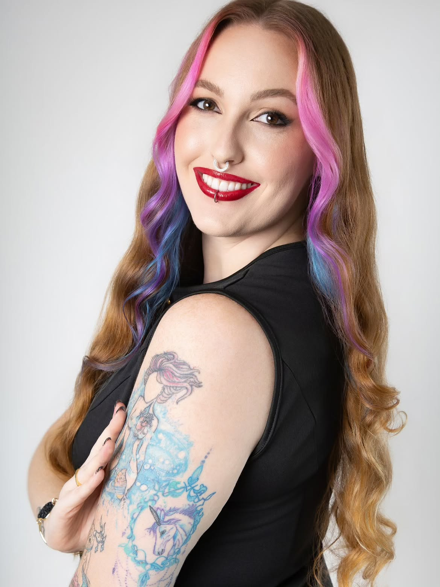

Um espaço calmo para você se encontrar de novo.
Atendimento individual para ansiedade, autoestima e autoconhecimento — com acolhimento de verdade, sem julgamento, no seu tempo.
Atendimento online em todo o Brasil · Sigilo absoluto

Se algo disso ressoa com você, vamos conversar
Esses são alguns dos motivos mais comuns que trazem as pessoas até aqui.
Ansiedade que não dá trégua
Pensamentos acelerados, tensão no corpo, dificuldade de relaxar — mesmo quando "não tem motivo".
Autoestima em baixa
Sentir que nunca é suficiente, se comparar demais, ter dificuldade de reconhecer o próprio valor.
Sensação de estar perdida
Aquela vontade de entender melhor quem você é e o que realmente quer pra sua vida.
Sou a Larissa, e acredito que terapia é sobre se sentir em casa com você mesma.
Sou psicóloga clínica com abordagem em psicologia analítica junguiana, formada para te ouvir sem pressa e sem julgamento. Cada sessão é construída no seu ritmo, com espaço para símbolos, sonhos e processos internos — porque não existe um jeito certo de processar o que você sente.
Atendo principalmente pessoas que lidam com ansiedade, autoestima e momentos de transição na vida, sempre com a mesma pergunta no centro: o que você precisa para se sentir mais inteira hoje?
Simples, sem burocracia
Do primeiro contato até a sua primeira sessão.
Você manda uma mensagem
Conta brevemente o que está sentindo e a gente já marca um horário que funcione pra você.
Conversa inicial
Na primeira sessão, nos conhecemos com calma — sem pressão pra contar tudo de uma vez.
Caminhamos juntas
Sessões semanais ou quinzenais, no seu tempo, construindo um espaço só seu.
Você não precisa ter tudo resolvido para merecer cuidado. Pedir ajuda é o primeiro passo de coragem.
Seu primeiro passo pode ser hoje
Manda uma mensagem agora e vamos encontrar o melhor horário para a sua primeira sessão.